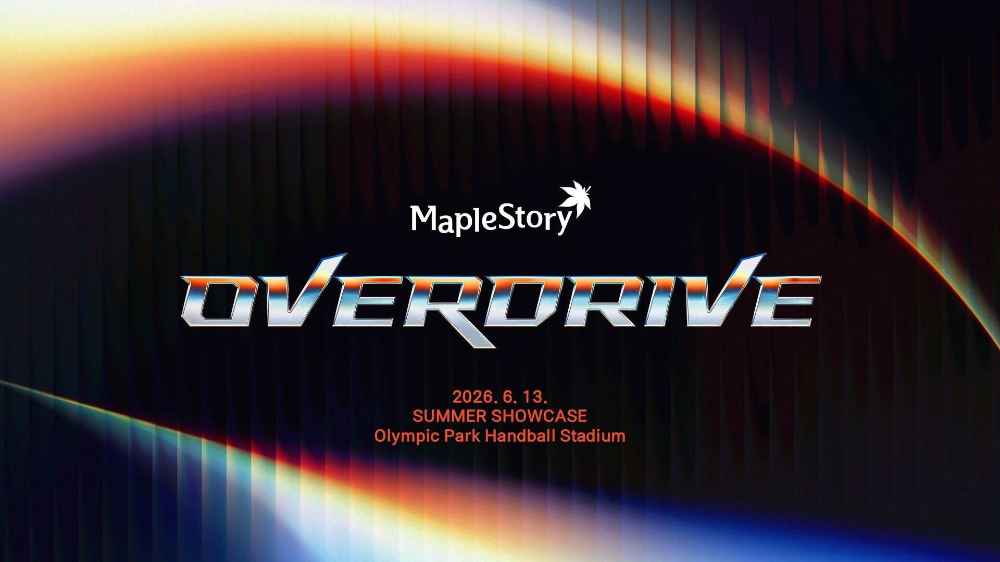
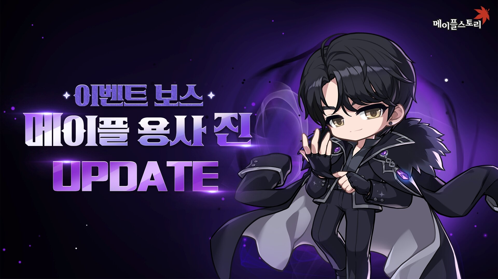
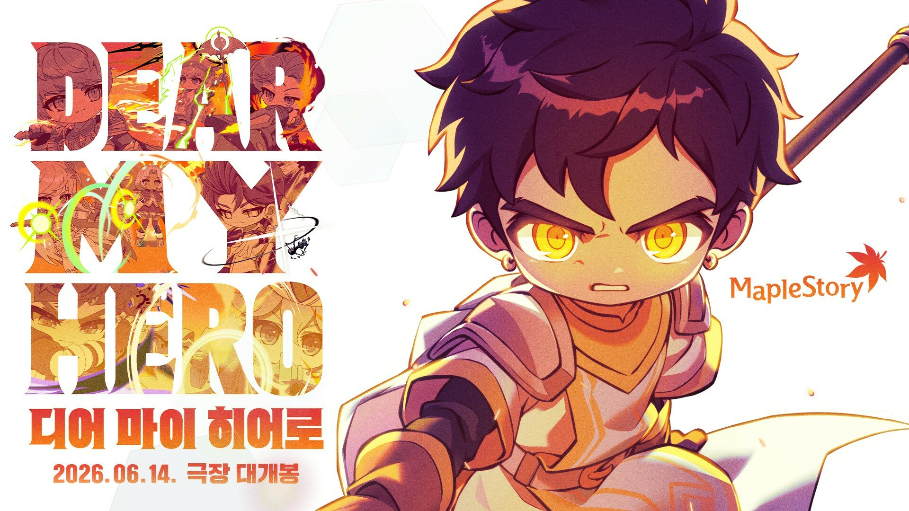

메이플 썸머 쇼케이스 6/13 예고, 여름 업데이트 미리보기 체크리스트
메이플스토리 여름 쇼케이스 '오버드라이브(OVERDRIVE)'가 6월 13일 토요일 오후 4시에 열립니다. 270레벨 이상만 신청할 수 있던 현장 티켓이 예매 시작 1분 만에 전부 팔렸을 만큼 관심이 뜨거운데요. 현장에 못 가도 챙길 건 똑같이 챙길 수 있습니다. 이 글에는 쇼케이스를 어디서 어떻게 보는지부터, 6월 13일 전에 이미 풀린 여름 콘텐츠와 그날 확인하면 좋을 포인트까지 미리 보기 체크리스트로 정리했습니다.
- 쇼케이스 '오버드라이브' — 6월 13일(토) 16시, 올림픽공원 핸드볼경기장
- 현장 티켓 1분 완판 → 못 가도 공식 유튜브·넥슨 라이브 무료 생중계, 롯데시네마 생중계(12,000원)
- 이미 진행 중: BTS 진 콜라보 보스 '메이플 용사 진'(6/17까지), 서머 카운트다운(솔 에르다 조각 300개)
- 다음 날 6월 14일, 극장판 애니 '디어 마이 히어로' 개봉 + 잠실 머쉬룸 파크
최종 업데이트: 2026.06.08
올해 여름 쇼케이스의 이름은 '오버드라이브(OVERDRIVE)'이고, 슬로건은 "지금까지의 변화, 그 이상으로"입니다. 일정은 6월 13일 토요일 오후 4시, 장소는 올림픽공원 핸드볼경기장이고요. 이름 그대로 한계를 넘어선다는 콘셉트라, 이 자리에서 올여름 대규모 업데이트 계획이 처음으로 공개됩니다.
메이플 유저라면 매년 여름·겨울 쇼케이스에서 다음 반년 동안 즐길 콘텐츠의 큰 그림이 한 번에 나온다는 걸 아실 텐데요. 그래서 신규 직업이나 신규 사냥터, 보스를 기다리는 분들에게는 6월 13일이 사실상 올여름 일정의 출발점이 되는 셈입니다.

현장 티켓은 5월 26일 저녁 8시에 티켓링크에서 풀렸는데, 270레벨 이상 캐릭터 보유자에게 발급된 멤버십 대상이었는데도 1분 만에 매진됐습니다. 별도로 100명을 추첨해 무료 초대하는 이벤트도 함께 진행됐고요. 그러니 지금 현장 입장권을 구하는 건 사실상 어렵다고 보는 게 맞습니다.
다만 못 가도 아쉬워할 필요는 없습니다. 쇼케이스 발표 내용은 공식 유튜브와 넥슨 라이브로 동시에 무료 생중계되고, 극장에서 크게 보고 싶다면 전국 롯데시네마 생중계도 있거든요. 관람 방법별로 정리하면 이렇습니다.
| 관람 방법 | 비용 | 관람 특전 |
|---|---|---|
| 현장(핸드볼경기장) | 매진(멤버십·추첨) | 시그니처 티켓 + 공식 응원봉 + 넥슨캐시 15,000원 상당 |
| 롯데시네마 생중계 | 12,000원(5/27부터) | 넥슨캐시 12,000원 상당 |
| 온라인(유튜브·넥슨 라이브) | 무료 | — |
정리하면, 굿즈와 넥슨캐시 특전까지 챙기려면 롯데시네마 생중계가 합리적이고, 발표 내용만 빠르게 보고 싶다면 무료 온라인 중계로 충분합니다.
사실 여름 콘텐츠 일부는 쇼케이스를 기다리지 않고 먼저 풀렸습니다. 그중 가장 화제가 된 게 방탄소년단(BTS) 진이 직접 기획한 신규 이벤트 보스 '메이플 용사 진'인데요. 가수 진 본인이 콘셉트와 보상 아이템 기획에 참여한 콜라보 보스라, 발표될 때부터 메이플 안팎에서 크게 회자됐습니다.

'메이플 용사 진'은 260레벨 이상 캐릭터가 1인 또는 최대 3인 파티로 주 1회 도전할 수 있고, 도전 기간은 6월 17일까지입니다. 지금 글을 보는 시점에 이미 진행 중이니, 아직 안 잡아봤다면 마감 전에 챙겨두는 게 좋겠습니다.
보스는 빅뱅 업데이트 이전 모험가의 근본 스킬, 그러니까 옛날 전사·마법사·궁수·도적 스킬을 활용한 패턴으로 공격합니다. 전장에 떨어지는 '단풍잎'을 모으면 최종 데미지가 크게 오르는 기믹이 있어서, 스펙이 낮아도 컨트롤로 클리어할 수 있게 설계됐고요.
성장 재화를 노린다면 서머 카운트다운 이벤트를 빼놓을 수 없습니다. 5월 14일부터 7월 1일까지 진행되는데, 기간 동안 출석과 미션을 챙기면 솔 에르다 조각 300개와 솔 에르다를 받을 수 있거든요. 솔 에르다는 6차 전직 핵심 성장 재화라, 본캐든 부캐든 이 기회에 모아두면 두고두고 도움이 됩니다.
여기에 신규 콘텐츠 '리버스 차원의 탑'도 예고됐습니다. 이름만 공개된 상태라 세부 구조나 보상은 아직 베일에 싸여 있는데, 이런 신규 콘텐츠의 자세한 내용이야말로 6월 13일 쇼케이스에서 제대로 풀릴 부분입니다. 미리 이름을 기억해 두고 그날 발표를 확인하시면 되겠습니다.
이번 여름은 게임 안에서만 끝나지 않습니다. 쇼케이스 다음 날인 6월 14일, 메이플스토리 극장판 장편 애니메이션 '디어 마이 히어로(DEAR MY HERO)'가 전국 롯데시네마에서 개봉하거든요. 예매는 6월 8일부터 상영관별로 순차 오픈됩니다.

작품은 시그너스 기사단의 신병 '아이단'의 이야기를 담았고, 러닝타임은 약 30분으로 부담 없이 볼 수 있는 분량입니다. 개봉일인 6월 14일부터 2주간 스페셜 아트카드를 증정하고, 롯데시네마 월드타워 7층은 6월 14일부터 7월 12일까지 메이플 테마 공간으로 꾸며진다고 하니, 영화를 본다면 같이 둘러볼 거리가 많습니다.
참고로 이 극장판은 관객 천만 돌파를 두고 개발진이 내건 공약이 화제가 됐을 만큼 분위기를 띄우고 있는데요. 게임 캐릭터가 스크린에서 어떻게 움직이는지 궁금했던 분이라면 한 번쯤 챙겨볼 만합니다.
밖에서 즐길 거리도 있습니다. 5월 22일부터 6월 21일까지 잠실 롯데월드타워 월드파크 잔디광장에서 '헤네시스 머쉬룸 파크'가 운영되는데요. 팝업스토어와 유니클로 UTme 커스텀 존이 함께 들어서고, 석촌호수에는 메이플 아트 벌룬도 설치됩니다. 쇼케이스 주간에 잠실 쪽을 들를 일이 있다면 가볍게 보고 오기 좋은 코스입니다.
정보를 두 갈래로 나눠 보면 챙길 게 분명해집니다. 먼저 이미 확정돼 지금 챙길 수 있는 것은 BTS 진 콜라보 보스 '메이플 용사 진'(6/17까지), 서머 카운트다운의 솔 에르다 조각 300개, 6월 14일 극장판 개봉, 그리고 잠실 머쉬룸 파크입니다. 이건 쇼케이스를 안 봐도 지금 바로 움직이면 됩니다.
반대로 쇼케이스에서 처음 확인할 포인트는 올여름 대규모 업데이트의 본편입니다. 신규 콘텐츠 '리버스 차원의 탑'의 구체적인 구조와 보상, 그 밖에 신규 사냥터·이벤트·성장 지원 같은 큰 줄기가 이날 한꺼번에 공개될 가능성이 높거든요. 그러니 6월 13일 발표는 "이번 여름에 뭘 하고 놀지"를 정하는 자리라고 보면 되겠습니다.
"지금 챙길 건 미리 챙기고, 큰 그림은 6월 13일 오후 4시에 확인한다."
메이플 여름 쇼케이스 '오버드라이브'는 6월 13일(토) 16시, 올림픽공원 핸드볼경기장에서 열리고, 못 가도 유튜브·넥슨 라이브 무료 중계나 롯데시네마로 볼 수 있습니다. BTS 진 콜라보 보스(6/17까지)·서머 카운트다운·6/14 극장판·잠실 머쉬룸 파크는 지금 챙기고, 여름 대규모 업데이트 본편은 쇼케이스 당일에 확인하시면 되겠습니다.
이번 주말 오후 4시, 채널 하나 열어두고 같이 지켜보시면 좋겠습니다. 발표 내용이 확정되면 그때 세부 콘텐츠도 따로 정리해 보겠습니다.